Para que serve
A Solicitação de Análise é a lista de todas as solicitações de análise do CQ: cada uma é um pedido para o laboratório coletar uma amostra e analisá-la (lote de matéria-prima, embalagem, produto, água ou sala). Nela você filtra a lista, vê o detalhe de cada pedido, abre uma solicitação manual, pede reanálise e cancela. Quem usa é o CQ (chefia, amostradores e analistas) e a Garantia da Qualidade, para pedidos fora da rotina (leitura da área). A maior parte das solicitações de material e de produto não nasce aqui: chega sozinha do Estoque e da Produção quando um lote é endereçado ou um produto acabado entra (RN-CQ-014). Esta tela é o ponto de partida do registro de amostragem e de teste (RDC 658/2022, art. 14, IV, e art. 258, I e II).
Quem usa e em que etapa do processo
Quem usa
- O Controle da Qualidade (chefia, amostradores e analistas) e a Garantia da Qualidade, que pedem análises fora da rotina (leitura da área; o sistema não diz quem é o dono da tela).
- O Estoque e a Produção, que abrem solicitações sem passar por esta tela (chegada automática, RN-CQ-014).
- Quem pode abrir, incluir, alterar, excluir, imprimir e ver o histórico está em "Quem pode usar (permissões)", mais abaixo.
Em que etapa do processo entra (tela 1 do menu Solicitação de Análise, módulo Controle da Qualidade)
- Pelo menu do CQ. A lista abre escondida: é preciso escolher "Produto / Material" ou "Água / Ambiente" e clicar em Pesquisar.
- Para abrir uma solicitação de produto ou material, o lote já precisa existir no Estoque e o motivo (cadastrado na tela Motivos) tem de ser escolhido.
- Para água, o ponto de água precisa estar cadastrado no Principal; para ambiente, a sala.
O que acontece depois (para onde o trabalho segue)
- Incluir (água/ambiente ou produto/material): grava uma solicitação por tipo de análise marcado (físico-químico, microbiológico), em "Coleta pendente de programação", com número "NNN/AA" e uma linha de inclusão no histórico. O próximo passo é a Programação de Amostragem (tela 04): a rodada 2 viu a solicitação 106/26 aparecer lá logo depois de criada (CT-CQ-R2-AC-01).
- Cancelar (em Detalhar): muda a situação para "Cancelada" e tenta gravar o histórico; com justificativa de menos de 255 caracteres, a gravação do histórico dá erro depois de o cancelamento já estar salvo.
- Reanálise (em Detalhar): abre a tela de inclusão com os dados da solicitação travados; ao salvar cria uma nova solicitação, cancela a anterior e a amostragem e as análises dela. Não testado.
- Ver / Ver log: só leitura.
Fonte: Resumo da tela e fluxo da tela (leitura do código e dos testes). O que for leitura da área precisa ser validado com a área.
Antes de começar (o que precisa existir)
| Precisa existir | Para quê | Onde se cadastra |
|---|---|---|
| Motivo (produto/material) | Obrigatório na inclusão de produto/material; "ROTINA" no filtro mostra as sem motivo | Controle da Qualidade › Tabelas de Apoio › Motivos |
| Item (código ou nome com pelo menos 3 letras; a busca só começa com 3 caracteres) | É o que se analisa | Cadastro de itens |
| Item de entrada (lote) no Estoque (produto/material) | O lote vem do Estoque: lote, validade, entrada, quantidade, unidade, volumes, fabricante e fornecedor são preenchidos sozinhos e travados | Estoque › Recebimento / Entrada de Material |
| Ponto de água (água) | É escolhido na inclusão de água | Principal |
| Sala (ambiente) | É escolhida na inclusão de ambiente | Principal (via serviço de tipos de item) |
Para só consultar a lista, nada além do acesso. A lista abre escondida: escolha "Produto / Material" ou "Água / Ambiente" e clique em Pesquisar.
Passo a passo
Situação das imagens (12/11/2026): os passos de consulta, inclusão de água, detalhe, cancelamento (só a pergunta, respondida NÃO) e reanálise foram executados no sistema legado e ilustrados abaixo, cada imagem conferida contra o texto. Sem imagem: a inclusão de produto ou material com item e lote (a busca de item vem vazia no ambiente de teste, DV-CQ-051), a mensagem de sucesso da inclusão (a tela respondeu erro), Cancelar com SIM, o detalhe de solicitação com motivo e a inclusão de ambiente.
Consultar
- Abra Solicitação de Análise. Escolha PRODUTO / MATERIAL (marcado de início) ou ÁGUA / AMBIENTE.
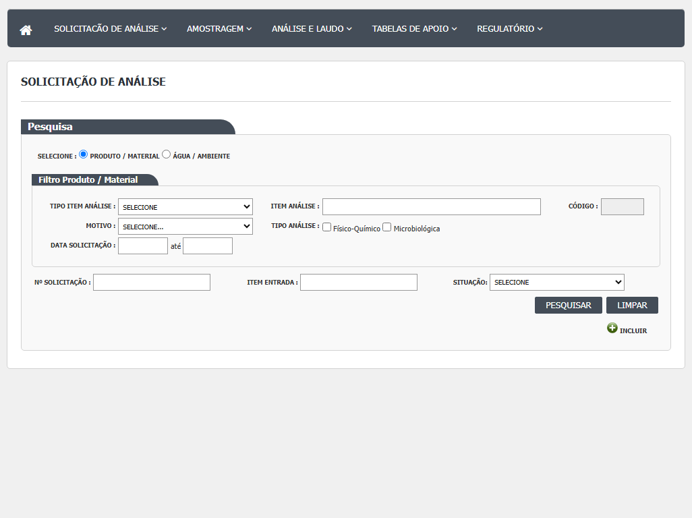
Figura 2: a tela Solicitação de Análise recém aberta (menu Solicitação de Análise): a lista abre escondida; escolha o tipo e clique em Pesquisar.
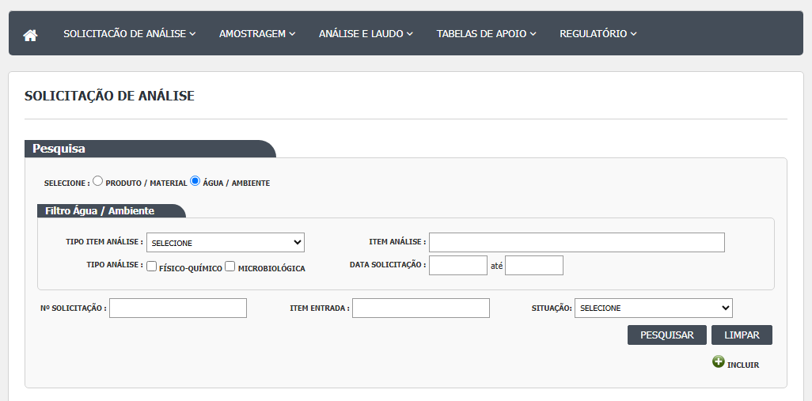
Figura 4: os filtros de Água / Ambiente depois de marcar a opção ÁGUA / AMBIENTE (o filtro de Produto / Material aparece quando se marca a outra opção).
- Preencha o que quiser filtrar. Produto/Material: Tipo Item Análise, Item Análise, Motivo ("ROTINA" mostra as que não têm motivo), Tipo Análise e Data Solicitação (de/até). Água/Ambiente: Tipo Item Análise, Item Análise, Tipo Análise e Data Solicitação. Em ambas: Nº Solicitação, Item Entrada e Situação (Index.cshtml:40-153).
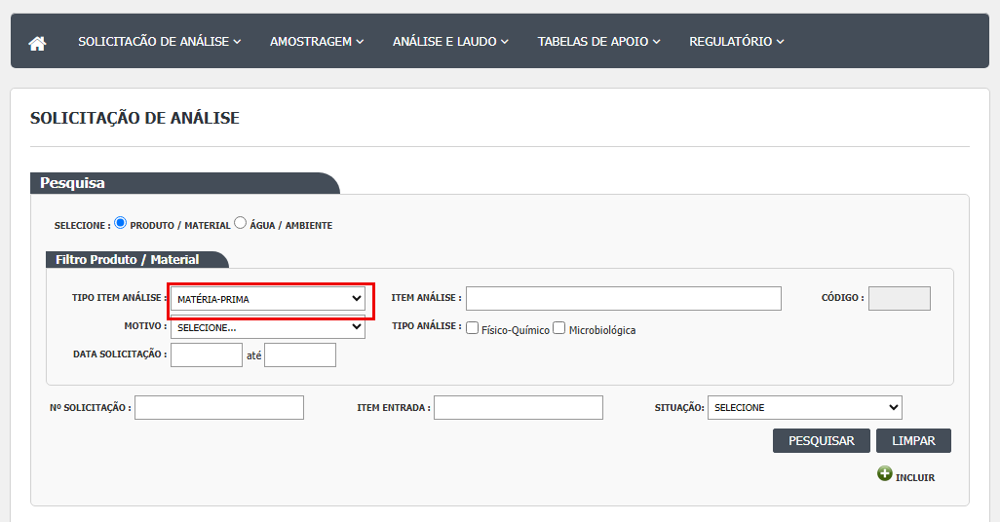
Figura 6: filtro Tipo Item Análise = MATÉRIA-PRIMA, antes de Pesquisar (campo destacado em vermelho).
- Clique em Pesquisar. A lista mostra 10 linhas por página, da mais nova para a mais antiga. Limpar esvazia os filtros e esconde a lista.
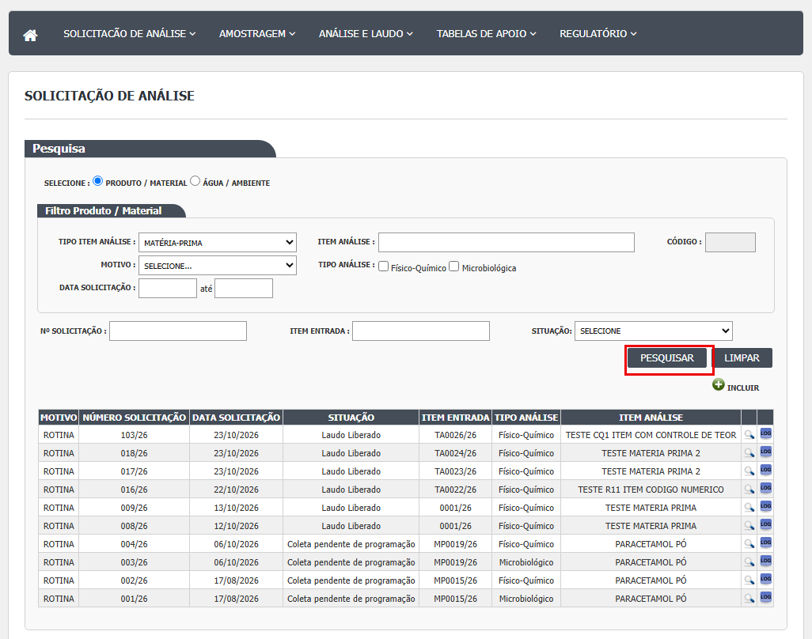
Figura 8: o botão Pesquisar destacado e a lista que aparece.
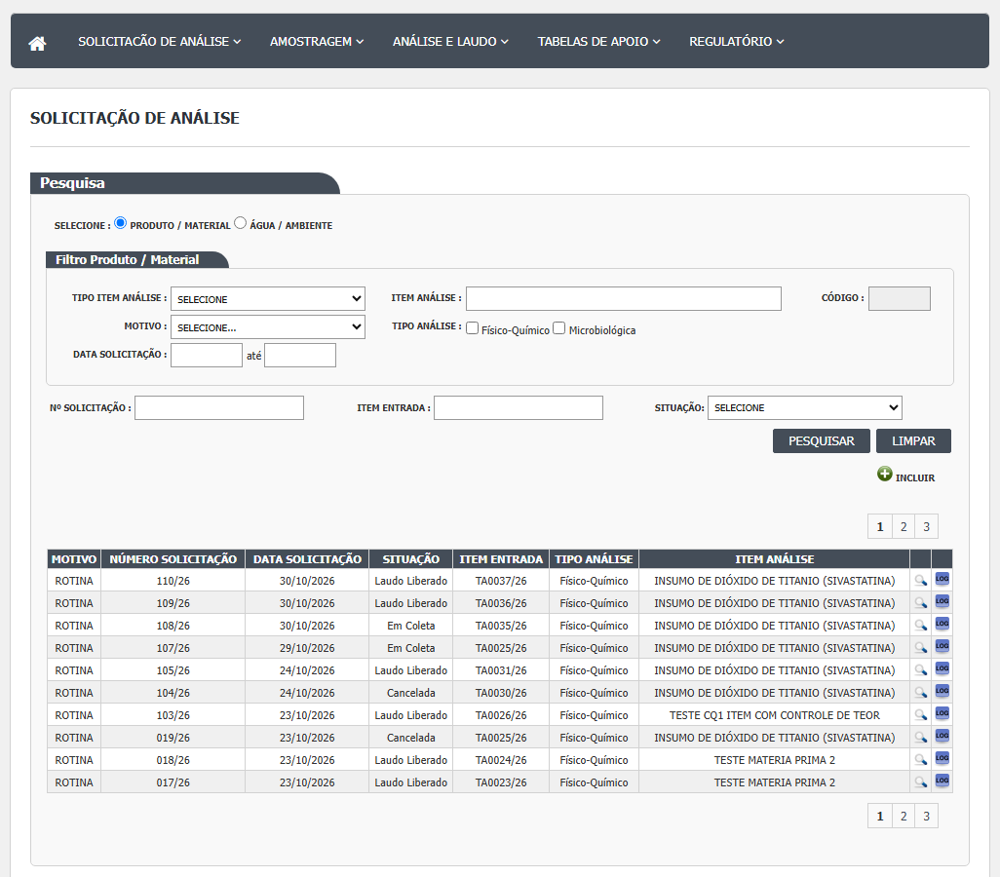
Figura 10: a lista de solicitações de produto/material: 10 linhas por página, páginas 1 2 3, lupa (Ver) e LOG em cada linha.
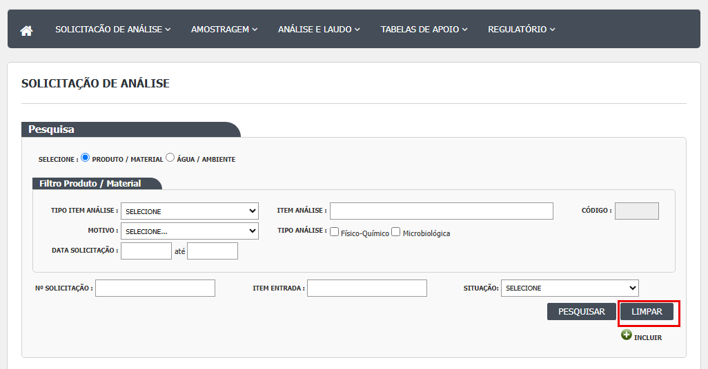
Figura 12: depois de Limpar: filtros vazios e lista escondida.
Incluir uma solicitação
- Clique em INCLUIR. Com "PRODUTO / MATERIAL" escolhido, abre a inclusão de produto/material; com "ÁGUA / AMBIENTE", a de água e ambiente.

Figura 14: a inclusão de produto/material aberta e vazia.
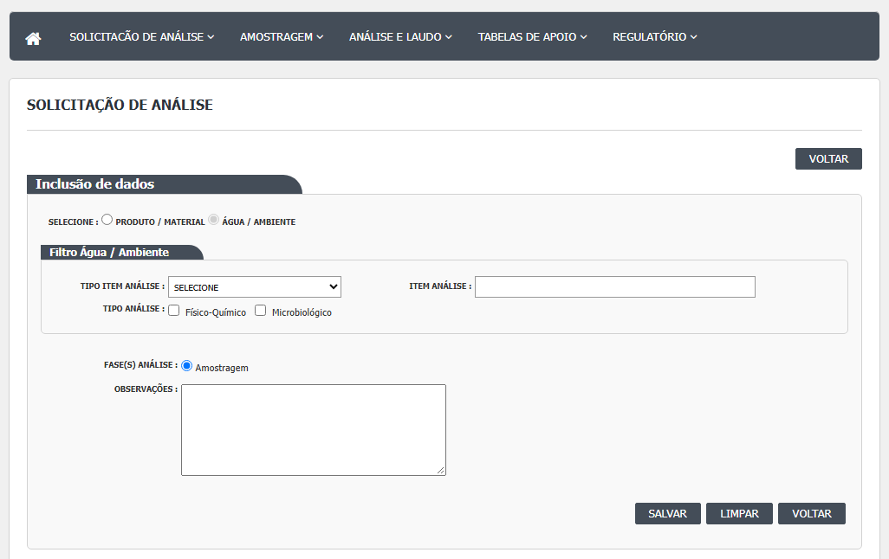
Figura 16: a inclusão de Água / Ambiente aberta e vazia.
- Água ou ambiente: escolha o tipo de item, digite pelo menos 3 letras do ponto ou da sala e selecione. Marque Físico-Químico e/ou Microbiológico (para ambiente, o Físico-Químico fica desabilitado). A fase "Amostragem" já vem marcada. Escreva observações (até 500 caracteres) e clique em Salvar.
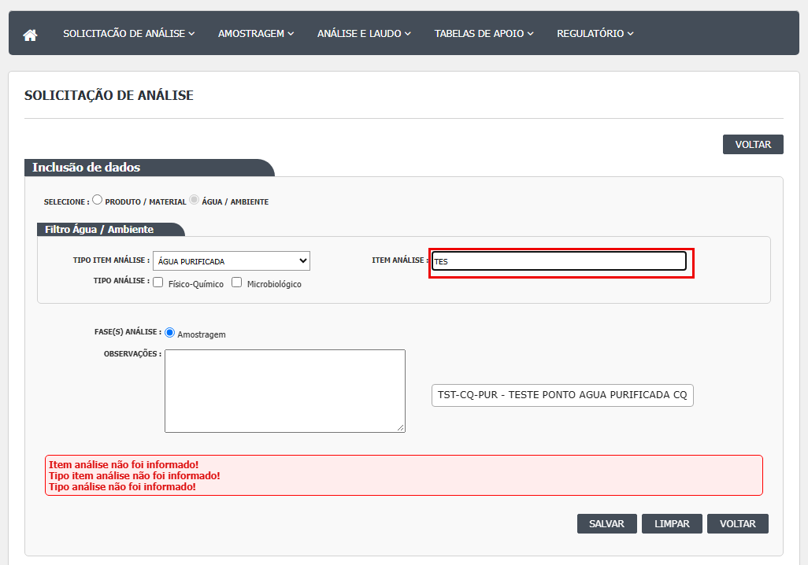
Figura 18: ao digitar 3 letras do ponto de água ("TES") aparece a sugestão "TST-CQ-PUR - TESTE PONTO AGUA PURIFICADA CQ".
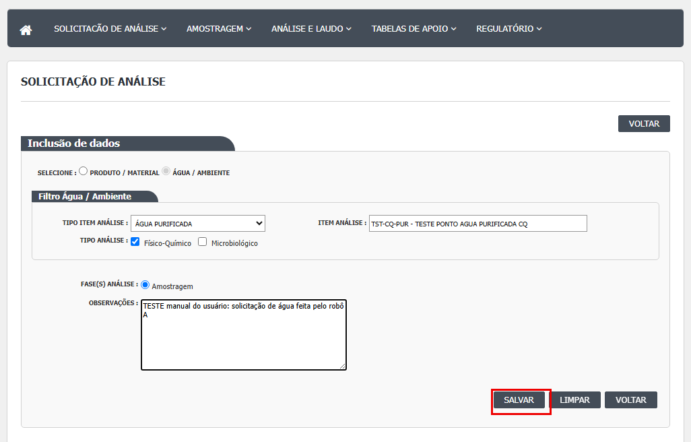
Figura 20: a inclusão de água preenchida: água purificada, ponto TST-CQ-PUR, Físico-Químico, fase Amostragem e observação; botão SALVAR destacado.
- Produto ou material: escolha o Tipo Item Análise, o Motivo, o Tipo de Análise, o Item Análise e o Item Entrada (lista de lotes do Estoque). Clique em Salvar e confirme "Confirma a inclusão da solicitação?".
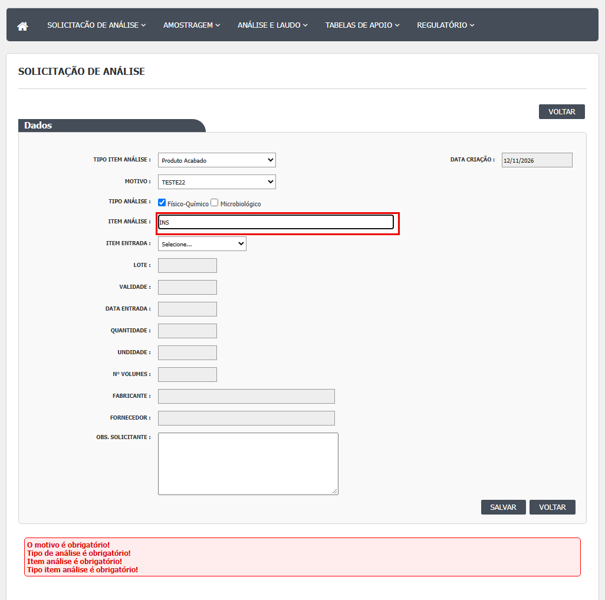
Figura 22: na inclusão de produto/material, o campo Item Análise com "INS" digitado: nenhuma sugestão apareceu em 12/11/2026 (busca de item vazia no ambiente de teste, DV-CQ-051).
- Aparece a mensagem de resultado e a tela volta à lista.
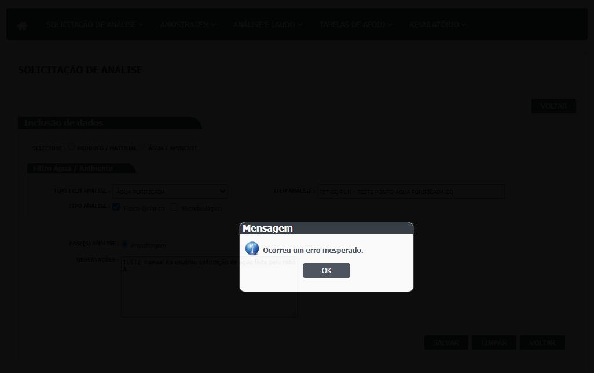
Figura 24: em 12/11/2026, ao salvar a água, a tela mostrou "Ocorreu um erro inesperado." (veja os cuidados: a solicitação foi gravada mesmo assim).
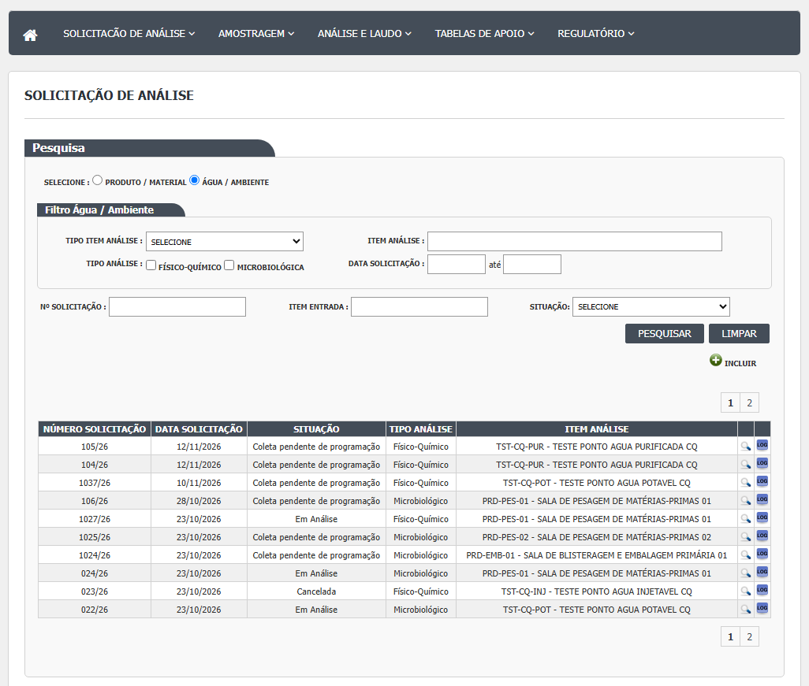
Figura 26: a lista de Água / Ambiente com a solicitação nova (104/26) no topo, em "Coleta pendente de programação".
Ver o detalhe, cancelar e pedir reanálise
- Na lista, clique na lupa. O detalhe abre com o título "CONSULTAR DETALHES DA SOLICITAÇÃO DE AMOSTRAGEM" (não "Solicitação de Análise"). Solicitação sem motivo abre o detalhe com Reanálise, Cancelar e Voltar; solicitação com motivo abre um detalhe só para leitura, sem Reanálise nem Cancelar (_SolicitacoesUsuario.cshtml:87-98; DetalharNovo.cshtml:25).
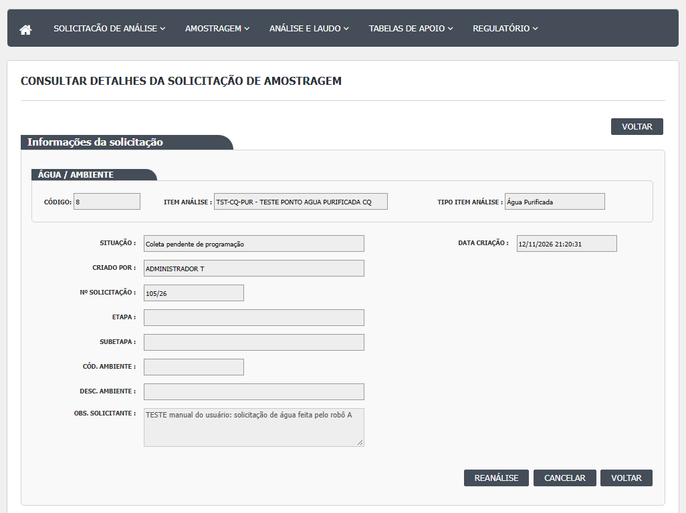
Figura 28: o detalhe de uma solicitação de água (campos só de leitura) com os botões REANÁLISE, CANCELAR e VOLTAR. O título do detalhe é "CONSULTAR DETALHES DA SOLICITAÇÃO DE AMOSTRAGEM", diferente do "SOLICITAÇÃO DE ANÁLISE" da lista.
- Cancelar: confirme "Confirma o cancelamento do item?", escreva a justificativa e clique em OK. O botão some depois que há justificativa no histórico.
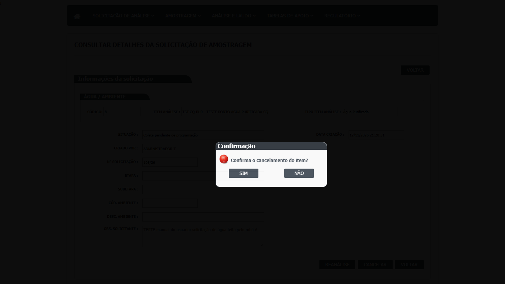
Figura 30: a pergunta "Confirma o cancelamento do item?", com SIM e NÃO.
- Reanálise: clique em Reanálise, escolha a fase e escreva a observação. Pelo código, a solicitação anterior, a amostragem e as análises dela são canceladas (não testado: ponto para validar com a área).
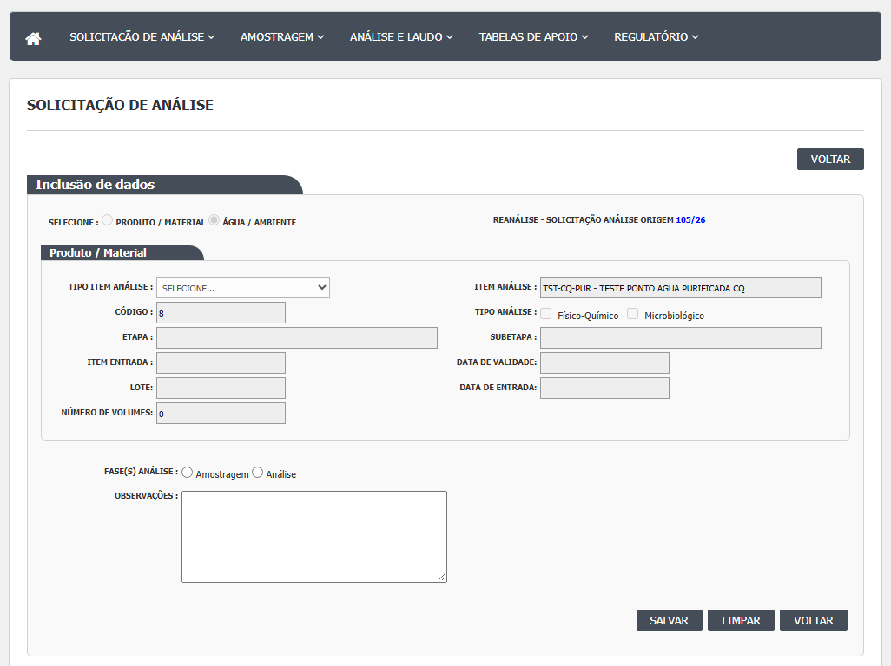
Figura 32: a tela de reanálise de uma solicitação de água (a legenda do quadro diz "Produto / Material" e o Tipo Item Análise vem vazio).

Figura 34: a fase Amostragem marcada e a observação escrita, antes de Salvar.
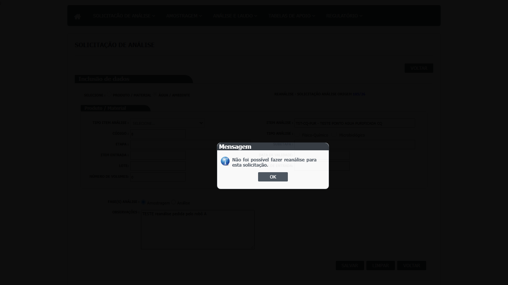
Figura 36: o resultado do Salvar: "Não foi possível fazer reanálise para esta solicitação."
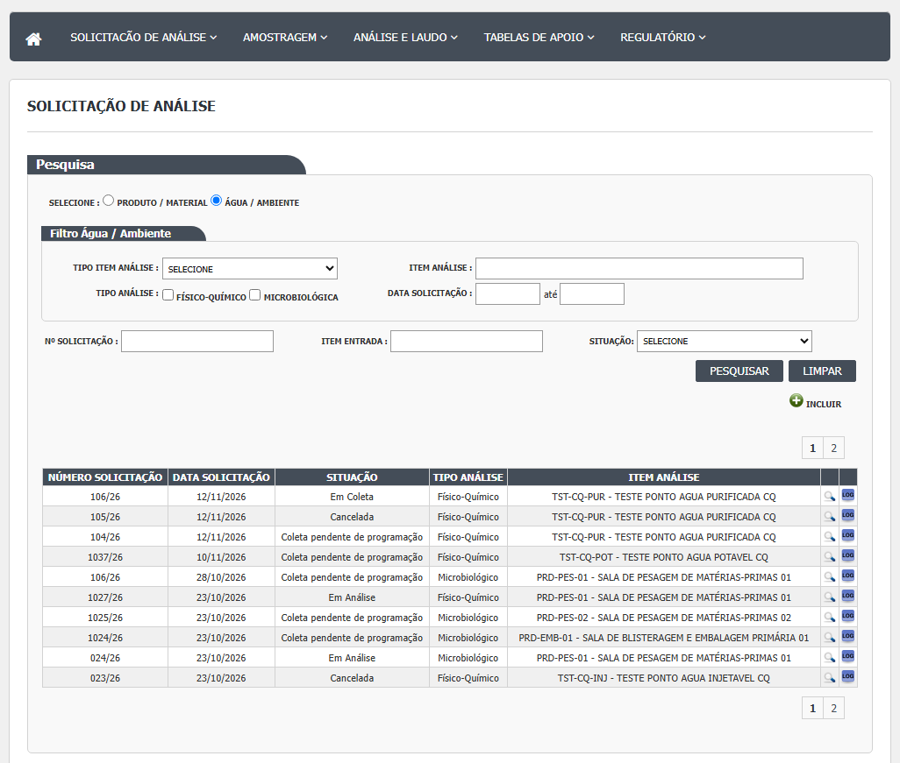
Figura 38: a lista depois disso: a solicitação de origem (105/26) ficou "Cancelada" e nasceu uma nova (106/26) "Em Coleta", apesar da mensagem de falha.
O que acontece ao confirmar ou salvar
- Incluir: grava uma solicitação por tipo de análise marcado (físico-químico, microbiológico), em "Coleta pendente de programação", com número "NNN/AA" e uma linha de inclusão no histórico. O próximo passo é a Programação de Amostragem (CT-CQ-R2-AC-01 viu a 106/26 aparecer lá).
- Cancelar: muda a situação para "Cancelada" e tenta gravar o histórico; com justificativa de menos de 255 caracteres, o histórico dá erro depois de o cancelamento já estar salvo (DV-CQ-007).
- Reanálise: cria uma nova solicitação e cancela a anterior, com a amostragem e as análises dela.
- Ver e Ver log: só leitura. Esta tela não grava no Estoque; lê dele o lote.
O que o sistema recusa
- Inclusão de água/ambiente: "Tipo análise não foi informado!", "Item análise não foi informado!", "Tipo item análise não foi informado!", "Fase Coleta ou Fase Análise não foi informada!", "Item entrada não informado!", "Etapa/SubEtapa não informado!"; e "Item entrada não deve ser informado!" ou "Etapa/subetapa não deve ser informado!" para tipo de item que não aceita lote ou etapa.
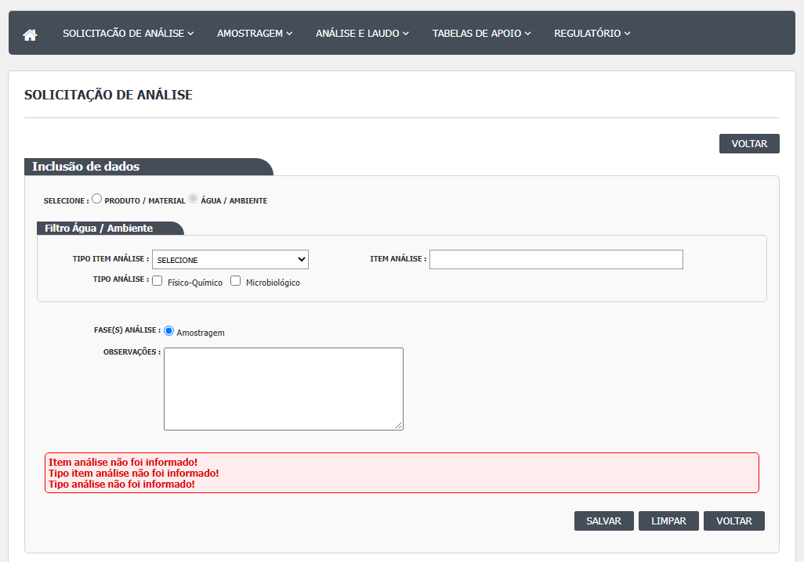
Figura 40: salvar a inclusão de água vazia: "Item análise não foi informado!", "Tipo item análise não foi informado!" e "Tipo análise não foi informado!".
- Inclusão de produto/material: "O motivo é obrigatório!", "Tipo de análise é obrigatório!", "Item análise é obrigatório!", "Item entrada é obrigatório!", "Tipo item análise é obrigatório!".
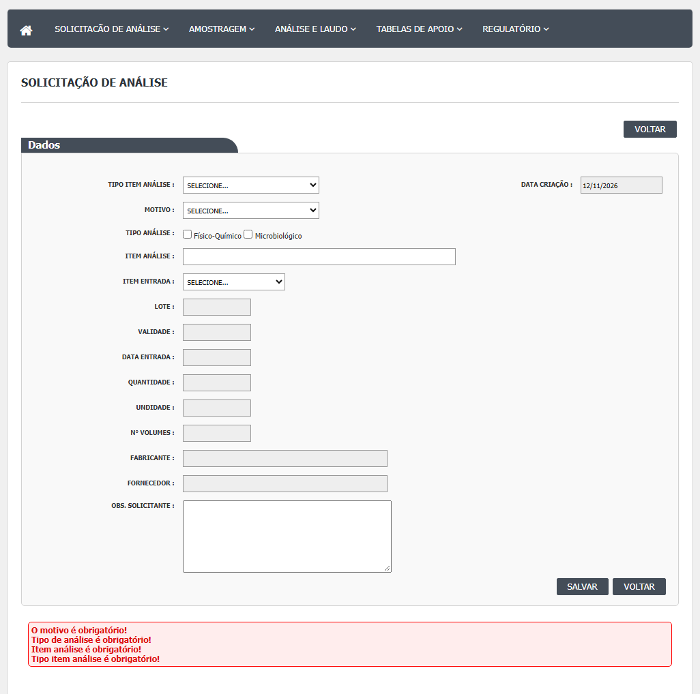
Figura 42: salvar a inclusão de produto/material vazia: aparecem quatro mensagens ("O motivo é obrigatório!", "Tipo de análise é obrigatório!", "Item análise é obrigatório!", "Tipo item análise é obrigatório!"); "Item entrada é obrigatório!" não apareceu nesta combinação.
- Cancelamento: "Informe a justificativa" e "A justificativa é obrigatória!" (só confere que não está vazia); "Não é permitido cancelar uma solicitação de análise com situação diferente de pendente." (a frase não descreve a regra: RN-CQ-017). Mesmo assim, o sistema deixou cancelar uma solicitação com laudo liberado (CT-CQ-017).
- Reanálise: "Fase(s) coleta ou análise deve ser informada." e "Não foi possível fazer reanálise para esta solicitação.".
- Falhas: "Ocorreu um erro inesperado." e "Ocorreu um erro interno não esperado.".
Quem pode usar (permissões)
- A tela é a função
solicitacaoanalise/solicitacaoanalise(DB/dml.sql:168); o menu respeita o perfil. Chefe de subdivisão: o código não exige nesta tela. - Só a abertura da lista, do detalhe e das inclusões de água/ambiente tem conferência de permissão, e ela confere só "consultar". Não têm conferência a abertura da inclusão de produto/material e todas as gravações e buscas (Salvar, Cancelar, Pesquisar, Reanálise, ListarLotes, RetornarLote). Não há conferência geral na aplicação (SEG-CQ-01).
- Ver log, Cancelar e Reanálise aparecem sem conferir permissão de log, de alteração ou de função.
- No teste, o usuário de perfil só de consulta abriu as três telas pelo endereço, viu Salvar e Cancelar e gravou a solicitação 106/26 (DV-CQ-027, Alta; CT-CQ-R2-AC-01). Cancelamento e reanálise com esse perfil não foram exercitados; pelo código, nada os barra.
Cuidados e falhas conhecidas
- Cancelar mostra erro e cancela mesmo assim ("Ocorreu um erro inesperado."): não repita o clique achando que não funcionou; o cancelamento fica sem o registro no histórico (DV-CQ-007, Alta). Até solicitação com laudo liberado é cancelada.
- Cancelada continua andando: a 016/26, cancelada aqui, voltou a gerar análise e teve etiqueta APROVADO impressa (DV-CQ-038, Alta, aberto em outra tela).
- Coluna Situação errada: a lista mostra "Laudo Liberado" para solicitação cancelada se alguma análise já tinha laudo; para saber a verdadeira, abra o detalhe (DV-CQ-021, Média).
- Histórico incompleto: o log mostra só a inclusão feita pelo Estoque; as decisões do CQ não aparecem (DV-CQ-006, Alta).
- Numeração fora de sequência: solicitações da agenda e a primeira seguinte saem fora da ordem (DV-CQ-024, Baixa).
- Observado em 12/11/2026, incluir água: depois de Salvar a tela mostrou "Ocorreu um erro inesperado.", mas a solicitação foi gravada (104/26, repetido: 105/26): não clique de novo, confira a lista (mesmo padrão do DV-CQ-047).
- Observado em 12/11/2026, número repetido: a água criada recebeu o número 104/26, que já existia (produto, de 24/10), e a reanálise recebeu 106/26, que já existia (água, de 28/10): confira o código do item e a data antes de citar o número (DV-CQ-024, agravado).
- Observado em 12/11/2026, reanálise: a tela diz "Não foi possível fazer reanálise para esta solicitação.", mas cancela a solicitação de origem e cria a nova (DV-CQ-056). Confira a lista antes de repetir.
- Observado em 12/11/2026, histórico da solicitação nova: o Ver log da 105/26 respondeu "NÃO EXISTE LOG DE ALTERAÇÃO PARA ESTE REGISTRO." (DV-CQ-057, ainda sem imagem).
- Observado em 12/11/2026, textos da tela: o campo se chama "UNDIDADE" e a reanálise de água traz a legenda "Produto / Material" (DV-CQ-058). A busca de item de produto/material não devolve sugestões no ambiente de teste (DV-CQ-051).
- Acesso: perfil só de consulta consegue incluir (DV-CQ-027, Alta).
- A tela não edita nem exclui solicitação criada, não pede senha ao cancelar e não mostra quem cancelou. Não prioriza (Priorização) nem programa a coleta (Programação de Amostragem).
Ícones e botões da lista

Figura 44: o histórico (LOG) de uma solicitação antiga: a linha "INCLUSÃO DE NOVO REGISTRO." com data, hora e usuário.
| Ícone | O que faz | Em que situação aparece |
|---|---|---|
| Lupa (Ver) | Abre o detalhe: com botões Reanálise e Cancelar se a solicitação não tem motivo; só leitura se tem | Em cada linha; o código tem duas variações conforme a situação (_SolicitacoesUsuario.cshtml:90-103) |
| LOG (Ver log) | Abre o histórico da solicitação | Conforme a leitura das regras de botões, só na segunda variação da lista; a seção de Botões da tela o descreve em cada linha. Ponto para validar na tela |
| Lápis (Editar) | — | Não existe nesta lista |
| Lixeira (Excluir) | — | Não existe nesta lista |
Botões da tela: Pesquisar, Limpar e INCLUIR (sempre); no detalhe, Reanálise (aparece sempre pela regra de botões, mas só em solicitação sem motivo pela tela de detalhe), Cancelar (só se não há justificativa) e Voltar.
Campos da tela
Fontes: Area/Views/SolicitacaoAnalise/*.cshtml e os scripts da pasta Area/Script/ (caminhos na seção Resumo).
Pesquisa (lista)
| Campo na tela | Tipo | Obrigatório | Regra, limite ou valores possíveis | Fonte |
|---|---|---|---|---|
| Selecione: Produto / Material ou Água / Ambiente | Botão de opção | Sim (um vem marcado) | Troca o conjunto de filtros e o tipo de itens listados (matéria-prima, embalagem, granel, produto acabado, semielaborado e padrão secundário, ou ambiente e as três águas) | Index.cshtml:33-34; SolicitacaoAnaliseRepository.cs:237-263 |
| Tipo Item Análise | Lista | Não | Material: tipos de material; Água/Ambiente: água potável, purificada, injetáveis e ambiente | Index.cshtml:50 e 104; ObterTipoItemAnaliseParaSolicitacaoService.cs:21-60 |
| Item Análise | Texto com busca (mínimo 3 letras) | Não | Procura no cadastro de materiais do Estoque ou de pontos de água e salas do Principal | Index.cshtml:57 e 111; AutoCompleteController.cs:12-44 |
| Código | Texto desabilitado | Não | Mostra o código do item escolhido | Index.cshtml:63 |
| Motivo | Lista | Não | "SELECIONE...", "ROTINA" (sem motivo) e os motivos cadastrados | Index.cshtml:71; SolicitacaoAnaliseController.cs:882-900 |
| Tipo Análise | Duas caixas | Não | Físico-Químico e Microbiológica; com as duas marcadas, não filtra por tipo | Index.cshtml:77-78; ConsultarSolicitacoesIndex.js:198-201 |
| Data Solicitação (de e até) | Datas com calendário | Não | A "até" vale até as 23:59:59 do dia | Index.cshtml:86-87; SolicitacaoAnaliseRepository.cs:199-206 |
| Nº Solicitação | Texto | Não | Contém o texto digitado | Index.cshtml:141; SolicitacaoAnaliseRepository.cs:219-220 |
| Item Entrada | Texto | Não | Contém o texto digitado | Index.cshtml:145; SolicitacaoAnaliseRepository.cs:222-223 |
| Situação | Lista | Não | As nove situações do cadastro; filtra pela situação gravada, não pela mostrada na coluna | Index.cshtml:149; SolicitacaoAnaliseRepository.cs:225-226 |
Lista de resultado
| Coluna | Observação | Fonte |
|---|---|---|
| Motivo | Só aparece na busca de produto/material; vazio vira "ROTINA" | _SolicitacoesUsuario.cshtml:12-17; SolicitacaoAnaliseController.cs:828 |
| Número solicitação, Data solicitação | Número "NNN/AA"; data no formato dd/mm/aaaa | _SolicitacoesUsuario.cshtml:19-27; SolicitacoesUsuarioModel.cs |
| Situação | Mostra "Laudo Liberado" se alguma análise da solicitação tem laudo liberado; senão, a situação gravada | SolicitacaoAnaliseController.cs:822 e 835; SolicitacaoAnaliseService.cs:470-485 |
| Item entrada, Tipo análise, Item análise | Item entrada só na busca de produto/material | _SolicitacoesUsuario.cshtml:28-36 |
| Lupa e Ver log | Ver detalhe; ver o histórico da solicitação | _SolicitacoesUsuario.cshtml:87-104 |
Inclusão de água e ambiente (Incluir.cshtml)
| Campo na tela | Tipo | Obrigatório | Regra, limite ou valores possíveis | Fonte |
|---|---|---|---|---|
| Tipo Item Análise | Lista | Sim | Água potável, purificada, injetáveis ou ambiente | Incluir.cshtml:184 |
| Item Análise | Texto com busca (mínimo 3 letras) | Sim | "Item análise não foi informado!" se vazio | Incluir.cshtml:192; SolicitacaoAnaliseController.cs:120 |
| Tipo Análise | Caixas | Sim, pelo menos uma | "Tipo análise não foi informado!". Para ambiente, o Físico-Químico é desabilitado só pelo script | Incluir.cshtml:200-204; SolicitacaoAnalise.js:75-92 |
| Fase(s) Análise | Botão de opção | Sim | Só "Amostragem" é oferecida na inclusão; "Análise" só aparece na reanálise | Incluir.cshtml:219-229; SolicitacaoAnalise.js:338 |
| Observações | Texto, até 500 | Não | Incluir.cshtml:237 |
Inclusão de produto e material (IncluirNovo.cshtml)
| Campo na tela | Tipo | Obrigatório | Regra, limite ou valores possíveis | Fonte |
|---|---|---|---|---|
| Tipo Item Análise | Lista | Sim | "Tipo item análise é obrigatório!" | IncluirNovo.cshtml:42; IncluirNovo.js:207-209 |
| Data Criação | Texto desabilitado | — | Data de hoje, só informativa | IncluirNovo.cshtml:48; SolicitacaoAnaliseController.cs:265 |
| Motivo | Lista | Sim | "O motivo é obrigatório!"; define o almoxarifado regulatório (retenção, referência, estabilidade) de onde saem os lotes | IncluirNovo.cshtml:56; IncluirNovo.js:191-193 |
| Tipo Análise | Caixas | Sim, pelo menos uma | "Tipo de análise é obrigatório!" | IncluirNovo.cshtml:64-67; IncluirNovo.js:195-197 |
| Item Análise | Texto com busca (mínimo 3 letras) | Sim | "Item análise é obrigatório!" | IncluirNovo.cshtml:89; IncluirNovo.js:199-201 |
| Item Entrada | Lista de lotes | Sim | "Item entrada é obrigatório!"; a lista vem do Estoque conforme o item e o motivo | IncluirNovo.cshtml:110; IncluirNovo.js:121-146 e 203-205 |
| Lote, Validade, Data Entrada, Quantidade, Unidade, N° Volumes, Fabricante, Fornecedor | Texto desabilitado | — | Preenchidos com os dados do lote no Estoque (a quantidade é o saldo do almoxarifado do motivo) | IncluirNovo.cshtml:118-174; IncluirNovo.js:148-161; SolicitacaoAnaliseController.cs:548-572 |
| Obs. Solicitante | Texto, até 1000 | Não | IncluirNovo.cshtml:182 |
Detalhe (Detalhar e DetalharNovo)
Mostram, sem poder alterar: código e nome do item, tipo do item, situação, data de criação, criado por, nº da solicitação, etapa e subetapa, código e descrição do ambiente, item de entrada, lote, validade, data de entrada, quantidade, unidade, nº de volumes, fabricante, fornecedor, observação do solicitante e, se a solicitação veio de uma reanálise, o número da solicitação de origem. O detalhe de solicitação cancelada mostra também a "Justificava de Cancelamento" lida do histórico (Detalhar.cshtml:32-41 e 223-233; SolicitacaoAnaliseController.cs:724-730). O DetalharNovo acrescenta o Motivo (DetalharNovo.cshtml:50-55).
Botões e ações
Quais botões cada pessoa vê depende das regras de acesso, que estão na seção de segurança.
| Botão ou ação | Quando aparece | O que faz | Para onde leva a solicitação | Fonte |
|---|---|---|---|---|
| Pesquisar | Sempre | Lista as solicitações dos filtros, 10 por página | Não muda | Index.cshtml:158; SolicitacaoAnaliseController.cs:426-470 |
| Limpar | Sempre | Esvazia os filtros e esconde a lista | Não muda | ConsultarSolicitacoesIndex.js:129-166 |
| INCLUIR | Sempre | Abre a inclusão de produto/material ou de água/ambiente | Não muda | Index.cshtml:163; ConsultarSolicitacoesIndex.js:226-237 |
| Lupa (Ver) | Em cada linha | Abre Detalhar (sem motivo) ou DetalharNovo (com motivo) |
Não muda | _SolicitacoesUsuario.cshtml:87-98 |
| Ver log | Em cada linha | Abre o histórico da solicitação | Não muda | _SolicitacoesUsuario.cshtml:102-104 |
| Salvar (inclusão) | Nas telas de inclusão | Confere os campos e grava uma solicitação por tipo de análise | Coleta pendente de programação | Incluir.cshtml:247; IncluirNovo.cshtml:190 |
| Limpar (inclusão) | Na inclusão de água/ambiente | Esvazia o formulário | Não muda | SolicitacaoAnalise.js:46-50 |
| Reanálise | Em Detalhar (solicitação sem motivo) | Abre a inclusão com os dados travados | Nova solicitação; a anterior é cancelada | Detalhar.cshtml:246; SolicitacaoAnaliseDetalhar.js:27-29 |
| Cancelar | Em Detalhar, enquanto não houver justificativa no histórico | Pede confirmação e justificativa e cancela | Cancelada | Detalhar.cshtml:248-253; SolicitacaoAnaliseDetalhar.js:4-19 |
| Voltar | Nas telas de detalhe e inclusão | Volta à lista | Não muda | Detalhar.cshtml:26 e 255 |
| Páginas ("1 2 3") | Quando a pesquisa traz mais de 10 linhas, acima e abaixo da lista | Troca de página e refaz a pesquisa | Não muda | UI/Web.config:15; vista em 30/10/2026 (captura B-novas-solicitacoes: três páginas, de produto/material, ordem da mais nova para a mais antiga) |
Mensagens do sistema
As marcadas "vista em teste" aparecem no resultado das rodadas.
| Mensagem (texto do código) | Quando aparece | Fonte |
|---|---|---|
| Tipo análise não foi informado! | Salvar sem tipo de análise (vista em teste, CT-CQ-001, 23/10/2026) | SolicitacaoAnaliseController.cs:122 |
| Item análise não foi informado! | Salvar sem o item (vista em teste, CT-CQ-N-19, 23/10/2026) | SolicitacaoAnaliseController.cs:120 |
| Tipo item análise não foi informado!; Fase Coleta ou Fase Análise não foi informada!; Item entrada não informado!; Etapa/SubEtapa não informado! | Salvar a inclusão de água/ambiente com o campo vazio | SolicitacaoAnaliseController.cs:121, 123, 133 e 143 |
| Item entrada não deve ser informado!; Etapa/subetapa não deve ser informado! | Tipo de item que não aceita lote ou etapa | SolicitacaoAnaliseController.cs:171 e 198 |
| O motivo é obrigatório!; Tipo de análise é obrigatório!; Item análise é obrigatório!; Item entrada é obrigatório!; Tipo item análise é obrigatório! | Salvar a inclusão de produto/material incompleta | IncluirNovo.js:192, 196, 200, 204 e 208 |
| Confirma a inclusão da solicitação? | Antes de gravar produto/material | IncluirNovo.js:108 |
| Inclusão efetuada com sucesso. | Solicitação gravada (vista em teste, CT-CQ-001 e CT-CQ-R2-AC-01) | CQControllerBase.cs:304 |
| Confirma o cancelamento do item? | Clique em Cancelar | SolicitacaoAnaliseDetalhar.js:5 |
| Informe a justificativa; A justificativa é obrigatória! | Janela de justificativa do cancelamento (só confere que não está vazia) | _ModalJustificativa.cshtml:43 e 32 |
| Cancelamento efetuado com sucesso. | Cancelamento e histórico gravados (não vista em teste: as duas tentativas deram o erro abaixo) | CQControllerBase.cs:307 |
| Ocorreu um erro inesperado. | Falha ao cancelar ou ao incluir (vista em teste, CT-CQ-017 e CT-CQ-N-31, 23/10/2026) | CQControllerBase.cs:303; SolicitacaoAnaliseController.cs:397-399 |
| Não é permitido cancelar uma solicitação de análise com situação diferente de pendente. | Cancelar uma solicitação já cancelada ou concluída (a frase não descreve a regra: ver RN-CQ-017) | CancelarSolicitacaoAnaliseService.cs:12 |
| Reanálise realizada com sucesso.; Ocorreram erros ao gerar a reanálise!; Fase(s) coleta ou análise deve ser informada.; Não foi possível fazer reanálise para esta solicitação. | Fim da reanálise (não vistas em teste) | SolicitacaoAnaliseController.cs:518 e 522; SolicitacaoAnaliseService.cs:302 e 452 |
| A pesquisa não retornou nenhum resultado. | Lista sem linhas (não vista em teste) | _SolicitacoesUsuario.cshtml:46 |
| Ocorreu um erro interno não esperado. | Falha de comunicação com o servidor, em qualquer chamada da tela | CQApi.js:20-22 |
Quem pode fazer o quê
Ainda não levantado para esta tela
O quadro "Quem pode fazer o quê" é preenchido a partir de testes de tela por perfil (nível, área e etapa do registro), nunca por suposição. Esta tela ainda não passou por esse levantamento.